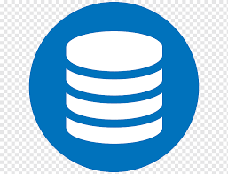

Backup é uma cópia de segurança dos seus dados de um dispositivo de armazenamento (celulares, tablets, computadores) ou sistema (aplicativos, softwares e jogos) para outro ambiente para que eles possam ser restaurados se você perdeu as informações originais, trocou de aparelho, entre outros casos.

Um banco de dados é uma coleção organizada de informações - ou dados - estruturadas, normalmente armazenadas eletronicamente em um sistema de computador. Um banco de dados é geralmente controlado por um sistema de gerenciamento de banco de dados (DBMS).